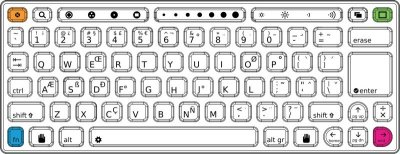

الاصلاح
تم نصميم XO بطريقة تجعل صيانته سهلة باستعمال يديك فقط، ومفك البراغي .للصور والتعليمات خطوة بخطوة على إصلاح اكس الخاص أو وضع قطع الغيار ، انتقل إلى http://wiki.laptop.org/go/Repair.
الرجوع إلى http://wiki.laptop.org/go/Repair_center_locations للوصول الى دليل آخر من مراكز الإصلاح ، وإذا كنت لا تريد لإصلاح اكس بنفسك.
تصحبح لوحة اللمس
لوحة اللمس XO لا يتوفر على امكانية النقر مثل بعض touchpads. ويجب النقر على زر الطويلة التي تحمل علامة X لإختيار شيء على الشاشة. في بعض الأحيان لوحة اللمس ويبدو أن تتصرف بطريقة متقطعة أو يظهر المؤشر قفز على الشاشة.إذا كان المؤشر لا يتبع إصبعك على لوحة اللمس، أو إذا كان ينتقل إلى زوايا عند لمس لوحة اللمس ، يرجى محاولة إعادة تقويم هذا الإجراء :
إضغط على مفاتيح ثلاثة في وقت واحد : اليسرى العليا ، اليمنى العليا ، والسفلى اليمنى من لوحة المفاتيح ومفتاح الرابعة ، زر fn ، ومفتاح أقصى اليسار ، وثم ارفع يدك عنهم جميعا.

وإذا لم يحل المشكل ، ومحاولة اغلاق الكمبيوتر المحمول وإزالة البطارية لمدة عشر ثوان قبل إعادة تشغيل.
وأخيرا ، سد ماوس الناقل التسلسلي العام القياسي في الكمبيوتر المحمول لتجاوز هذه المشكلة.
التحقق من المفاتيح التي تبقى عالقة أسفل
يجب أن يكون لديك مفتاح XO للقيام بهذا الاختبار لوحة المفاتيح. الرجوع إلى http://wiki.laptop.org/go/Developer_key لمزيد من المعلومات حول مفتاح.
- عندما تقوم بغلق الجهاز، باستمرار علامة الاختيار "زر" لعبة (فوق زر الطاقة) ، في حين تضغط على زر الطاقة. بعد البدء ، وشاشة عرض "افرجوا عن مفاتيح اللعبة لمواصلة" ويظهر الرسم البياني نصه ضغط مفتاح.
- ارفع اصبعك عن زر علامة الاختيار "check mark".
- بعد أن تشاهد "Type the Esc key to interrupt automatic startup" ، اضغط على مفتاح Esc في الزاوية اليسرى العليا للوحة المفاتيح . الجهاز سيعرض ok..
- اكتب :
test keyboard
واضغط على enter
خريطة لوحة المفاتيح الزرقاء يعرض على الشاشة. - اضغط على كل زر لمشاهدة خريطة لوحة المفاتيح مفتاح تشغيل ضوء أزرق.
إذا ظهر على الشاشة يظهر مفتاح الضوء الأزرق باستمرار ، لوحة المفاتيح لديها مشكلة مع الشائكة التي مفتاح معين. الرجوع إلى مركز إصلاح للتشخيص في http://wiki.laptop.org/go/Repair_center_locations - اضغط على مفتاح الخروج (الدائرة مع x) مرة أخرى للخروج من اختبار لوحة المفاتيح.
- ثم اكتب كلمة لإعادة تشغيل.
إصلاح الأضرار التي لحقت لوحة المفاتيح
إذا يصبح معطوبا لوحة المفاتيح ، عادة ما يجب استبداله. قطع الغيار متوفرة من خلال مراكز الإصلاح. ويمكن الاطلاع على معلومات عن قطع الغيار ومراكز إصلاح في http://wiki.laptop.org/go/Repair_center_locations.
استعادة البرنامج إلى اعدادات المصنع
إذا كنت تريد أن يمسح تماما الجهاز ، يمكنك محاولة تحديث جهاز الكمبيوتر لإعادة تثبيت نظام التشغيل وأنشطتها.المرجوا الرجوع إلى تعليمات إعادة الاعدادات الأصلية للحصول على المزيد من التعليمات. يرجى الانتباه الى أن جميع البيانات سوف تضيع.اصلاح الأجزاء الداخلية للجهاز
ويمكن لجهاز XO أن يعطيك معلومات حول الإصلاحات الممكنة.
ابدأ عن طريق الضغط على زر الطاقة لمدة ثانية ، ومن ثم الإجابة على الأسئلة التالية.
هل يضيء مؤشر الطاقة عند تشغيل الجهاز؟
عند الضغط على زر الطاقة مرة واحدة، وقوة الصمام لا تشغيل ، أول محاولة إعادة التشغيل:
لإعادة تشغيل XO ، قم بإزالة جميع مصادر الطاقة من أجهزة الكمبيوتر المحمول :
1. قم بإخراج البطارية وإزالة محول الطاقة.
2. انتظر دقيقتين. يسمح جزءا لا يتجزأ من هذه الأجهزة لتفقد كل السلطة وإعادة نفسها.
3. استبدل على الأقل مصدر واحد للطاقة، إما بطارية أو محول الكهرباء ، ومشاهدة مؤشر الطاقة / البطارية أثناء القيام بذلك.
مؤشر البطارية يتحول للحظات خاطفة الى البرتقالي (حوالي 1 / 4 من الثانية) إعادة تطبيق الاول عندما الطاقة. إذا كنت لا ترى هذا الفلاش ، لديك مشكلة في جهاز اما اللوحة الأم أو خلل في firmware المثبت . اتصل مركز اصلاح للحصول على المساعدة.
هل تظهر على الشاشة "Connect power to proceed"؟
أحيانا يتطلب تحديث البرامج الثابتة مصدران للطاقة ،البطارية ومحول الكهرباء. إذا كانت هذه هي المشكلة ، وتقديم كل من مصادر الطاقة وإعادة تشغيل الكمبيوتر. وينبغي لجهاز المضي قدما في تحديث firmware والاشتغال بطريقةعادية.
هل يظهر رمز XO فقط؟
وهذا يعني أن الجهاز بدأ عملية التشغيل.
يمكنك ان ترى المزيد من المعلومات حول البرنامج Open Firmware من خلال ضغط على علامة الاختيار "check mark" لعبة (فوق زر الطاقة) بعد التشغبل. وهذا يجعل Open Firmware يعرض رسائل أكثر تفصيلا حول ما يقوم به أثناء عملية الاطلاق (بما في ذلك رسائل التمهيد في وقت مبكر من نواة لينكس). الرسائل باللغة الإنجليزية فقط.
هل يظهر رمز XO مع الرقم التسلسلي وثلاث أيقونات تحته؟
اذا قمت بتشغيل الكمبيوتر المحمول، ولم يتوقف عند عرض الرمز XO في منتصف الشاشة ، يليه رقم تسلسلي (CSN74902B22 على سبيل المثال) ، وثلاث أيقونات (الذاكرة SD ، ذاكرة USB ، الشبكة).وسيظهر "Activation lease not found" في أعلى الشاشة وخارج السلطة بعد ذلك بوقت قصير.
الحل هو إعادة تنشيط الكمبيوتر المحمول. الحصول على نسخة من المفتاح (أو مفتاح جديد) من بلدكم مدير التنشيط ، وضعه (المسمى "lease.sig") في مفتاح USB والتمهيد للكمبيوتر محمول. راجع "ما يجب القيام به مع مفاتيح التشغيل" ضمن المقطع : http://wiki.laptop.org/go/Activation_and_Developer_Keys.
هل يظهر رمز XO مع وجه "حزين" فوقه؟
وهذا يعني أن Open Firmware لا يمكنه العثور على نظام تشغيل في ذاكرة فلاش الداخلية. عند انطلاق Firmware يبحث في ذاكرة USB وبطاقة الذاكرة عن برنامج نظام التشغيل.
حاول ترقية أو إعادة تثبيت البرنامج. http://wiki.laptop.org/go/Secure_Upgrade.
رمز XO مع نقطة واحدة اسفله؟
وإذا اشتغل الجهاز ثم توقف، ولكن يتوقف عند مجرد عرض رمز XO في الوسط، مع نقطة واحدة اسفله ، فهذا يعني أن شيئا ما كان خطأ عندما بدأ نظام التشغيل لينوكس. وعندما يحدث ذلك ، حاول ترقية أو إعادة تثبيت XO.
وإذا كان هذا قد حدث لأكثر من مرة، قم باستشارة مركز إصلاح كامل للتشخيص وإصلاح في
http://wiki.laptop.org/go/Repair_center_locations.
Author : Repairing
© adam hyde 2008
Modifications:
Anne Gentle 2008
A Holt 2008
Sandy Culver 2008
Tom Boyle 2008
License : General Public License
Produced in FLOSS Manuals